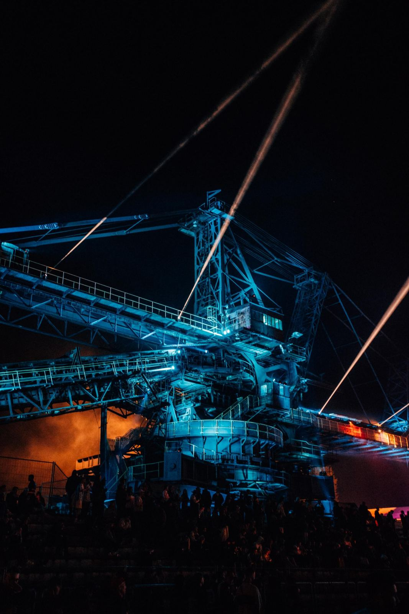

Festivals · Music
splash! Festival 2027
- Dates
- –
- Venue
- Ferropolis
- Location
- Gräfenhainichen, Germany
- Format
- In-person
- Category
- Music
- Industry
- Hip-hop festival
- Official website
- https://splash-festival.de/
About
Dates are local to the host city (Central European Time, UTC+1 / UTC+2 in summer).
Topics: hip-hop, rap, open-air.
No organiser attendance figure found on the official pages fetched 24 Nov 2026. Ranked by our estimated size tier 'large' (30,000-100,000 attendees/visits), a judgement from format, venue and scale, not an official number.
Sources
- Official — https://splash-festival.de/
Hotels
- Hotel im See- und Waldresort Gröbern — 4★ · Alte Chausseestraße 1, 06774 Muldestausee, Germany · 7.1 km from the venue · Price on request
- Ringhotel Hotel Zum Stein — 4★ · Erdmannsdorffstraße 228, 06785 Oranienbaum-Wörlitz, Germany · 9.0 km from the venue · Price on request
- Hotel Landhaus Wörlitzer Hof — 4★ · Wörlitzer Markt 96, 06785 Oranienbaum-Wörlitz, Germany · 9.7 km from the venue · Price on request
- Heidehotel Lubast — 4★ · An der Bundesstr. 1, 06901 Kemberg, Germany · 12.5 km from the venue · Price on request